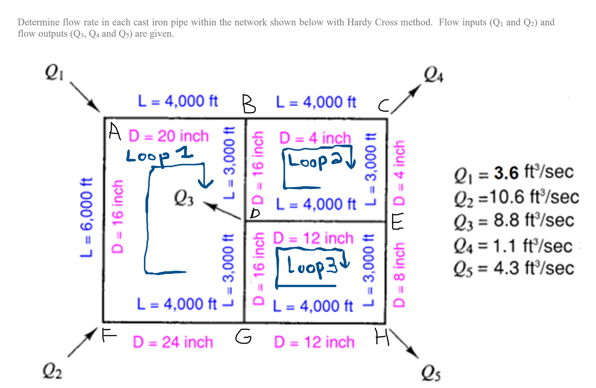

Independent project · Fluid systems analysis
The Hardy Cross Calculator
Developed a macro free Excel solver for a 10 pipe, 3 loop cast iron water network using both Darcy Weisbach and Hazen Williams. 8 iterations per loop produced converged flow results within approximately 2%, while exposing a major pressure discrepancy in 1 branch.

Numerical method
Iterative flow correction through energy balance
A looped network contains more unknown flows than independent continuity equations. The calculation begins with a continuity compliant flow estimate, determines each loop's signed head loss imbalance, and applies a corrective flow increment to every pipe in that loop:
ΔQ = − Σh / Σ( n · h / |q| )
The exponent n equals 2 for Darcy Weisbach and 1.852 for Hazen Williams. The workbook evaluates both methods across 8 visible iterations, preserving every intermediate correction for verification and comparison.
Calculated results
Converged network flow distribution
Positive values follow each pipe's defined reference direction; negative values indicate reverse flow. Both friction models converged, with pipe flow predictions agreeing within approximately 2%.
| Pipe | L (ft) | D (in) | Q, Darcy Weisbach (cfs) | Q, Hazen Williams (cfs) |
|---|---|---|---|---|
| AB | 4,000 | 20 | +5.344 | +5.310 |
| BC | 4,000 | 4 | +0.520 | +0.520 |
| CE | 3,000 | 4 | −0.580 | −0.580 |
| EH | 3,000 | 8 | +0.859 | +0.834 |
| GH | 4,000 | 12 | +3.441 | +3.466 |
| FG | 4,000 | 24 | +8.856 | +8.890 |
| AF | 6,000 | 16 | −1.744 | −1.710 |
| BD | 3,000 | 16 | +4.824 | +4.789 |
| DG | 3,000 | 16 | −5.415 | −5.424 |
| DE | 4,000 | 12 | +1.439 | +1.414 |
Friction model selection drives a 3 fold head loss difference
Summing head loss from a 100 psi inlet along A→B→C gives 175.2 ft under Darcy Weisbach and 64.5 ft under Hazen Williams. This represents a material design difference: Hazen Williams predicts +28.8 psi at node C, while Darcy Weisbach predicts −19.2 psi, which is not physically deliverable at the specified inlet pressure.
Isolated the discrepancy to pipe BC: 4,000 ft of 4 inch cast iron line carrying 0.52 cfs at approximately 6 ft/s. The upstream 20 inch pipe contributes only several feet of loss, confirming that 1 high resistance branch governs the feasibility conclusion.
| Node | DW | HW |
|---|---|---|
| C | −19.2 psi | 28.8 psi |
| D | 73.3 psi | 76.1 psi |
| H | 55.5 psi | 62.4 psi |
Predictions at nodes D and H remain comparable; node C diverges because its supply path includes the 4 inch high resistance branch.
Exposed every iteration to verify convergence behavior, identify the limiting loop, and detect traversal sign errors that can remain hidden in black box solver output.
Consolidated model constants on 1 input sheet so changes to pipe material or the Hazen Williams coefficient update the complete network without formula modification.